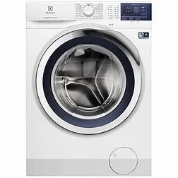
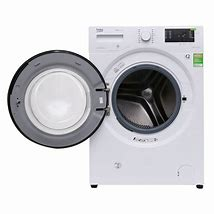
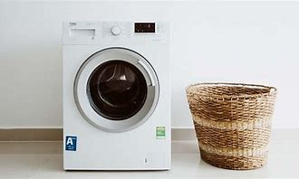
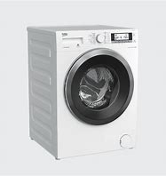
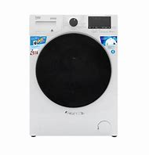

Đặc điểm nổi bật
- Công nghệ Inverter vận hành êm, bền và tiết kiệm điện.
- Công nghệ Ultra Mix giúp giữ quần áo bền màu như mới.
- Công nghệ Vapour Care diệt vi khuẩn và tác nhân gây dị ứng.
- Chương trình giặt Vapour Refresh làm mới, giảm nhăn quần áo.
- Công nghệ AutoSense giảm sờn rách, hao mòn, bảo vệ quần áo.
- Máy giặt có chương trình giặt an toàn cho trang phục len.